Hello 👋 I'm Nickolas Cerrone
I am a Computer Science major from the University of Michigan with a passion for game development. Currently, I serve as a Unity programmer for WolverineSoft, a student and alumni-led game development studio. I've also immersed myself in the field through numerous personal projects, collaborative game jams, and even the development of my own C++ game engine. My other hobbies include staying active through running (planning on a marathon this summer 🏃) and hosting board game nights with my friends.
Featured Projects
 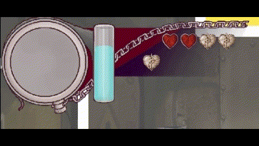
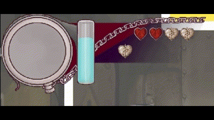
Corrupt Eldritch Order
Programmer and Quality Assurance, January 2024 - April 2024
Corrupt Eldritch Order is an action rogue-like where you must defeat stages of enemies to escape the abyssal depths.
Contributions:
- Created various menus, notifications, and HUD elements
- Implemented currency drops with Unity's particle system
- Gathered bug reports, feature requests, and polish concerns
- Added a robust sytem for permanent unlockables
- Integrated art into various parts of the game
- Effectively communicated with teammates to enable clear flow of ideas
Surreal Engine
Solo Programmer, January 2024 - Present
A Unity-inspired game engine that enables creation of advanced mechanics and visuals.
Features:
- Lua scripting support via LuaBridge
- Scene management system where users can construct scenes composed of actors
- Component system for actors with lifecycle and physics callbacks
- Integrated Box2D physics engine, providing users with a robust physics API
- Intuitive input API that supports keyboard, mouse, and gamepads
- Create an EventBus API that allows for elegant decoupling of components
- Multiple audio channels with support for precise audio playback

 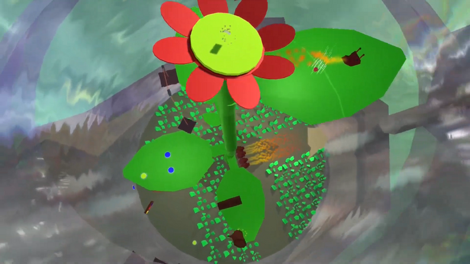
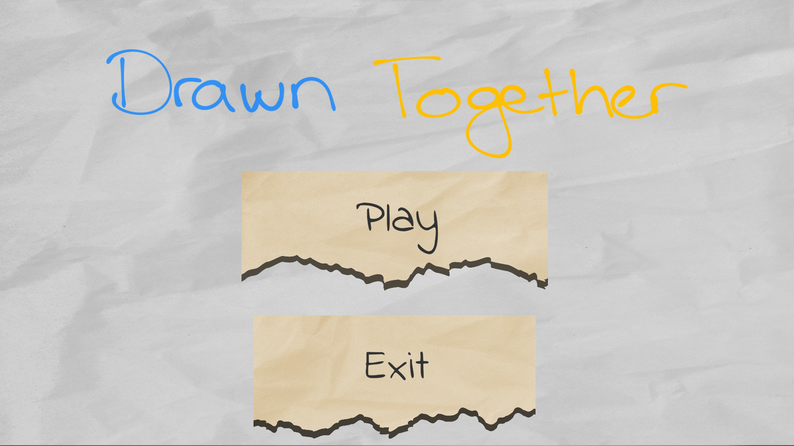
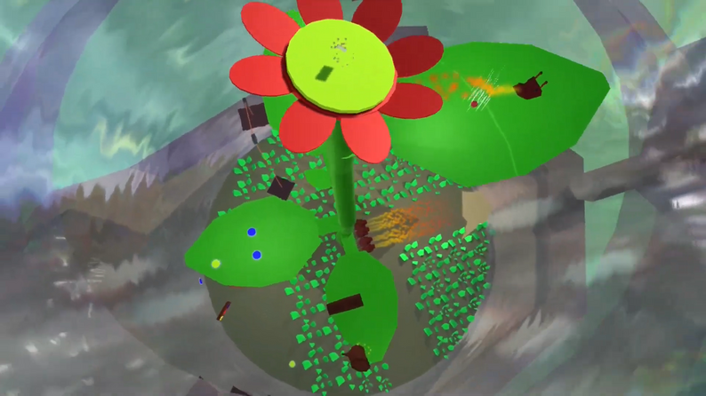
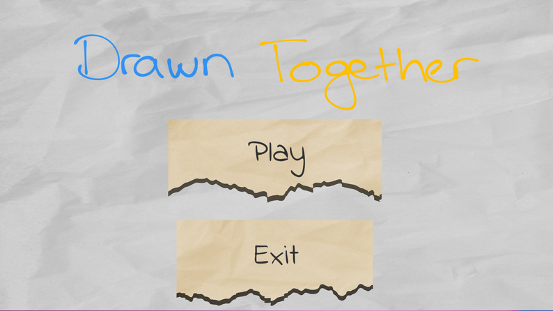
Drawn Together
Programmer, October 2023 - December 2023
Drawn Together is a 3D puzzle-platformer where you must work together to collect Skrib and Sketch's missing pages.
Contributions:
- Designed and implemented unique character abilities
- Integrated split-screen and cinematic camera features
- Designed and added the tutorial level
- Implemented in-game UI and title screen
- Realized narrative into game via cutscenes
- Lead creation of the game's trailer
- Spearhead game's marketing and animated trailer


One Man Band
Programmer, April 2024
One Man Band is a rhythm game where your survival against endless hordes depends on your ability to move to the music, turning your collection of instruments into a symphony of destruction.
Contributions:
- Designed and implemented all game mechanics and features in my own Surreal game engine
- Created art and music
- Used game development process to add and improve features to my engine
Yahtzee Android App
Programmer, December 2020
A mobile app implementation for the claassic game Yahtzee.
Contributions:
- Implemented scoring options detection algorithm for dice rolled
- Utilized SQL database to create persistant user storage
- Designed a polished UI to enable easy navigation and game play
Open Sheet
Solo Programmer, May 2023 - August 2023
A tabletop RPG character sheet focused on user customization.
Features:
- Designed project structure from the ground up using Electron and React to create a modern desktop application while leveraging web technologies
- Standardized user input and program output data with JSON schema validation
- Employed the NextJS React framework to streamline page routing and project management
- Ingested and transformed large, complex datasets from external sources to fit project requirements
Game Jam Games
 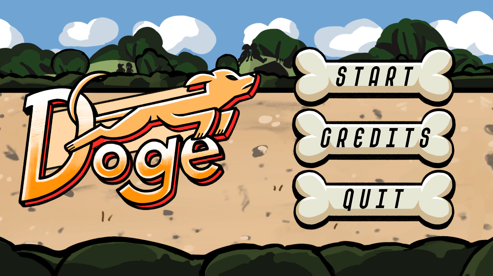
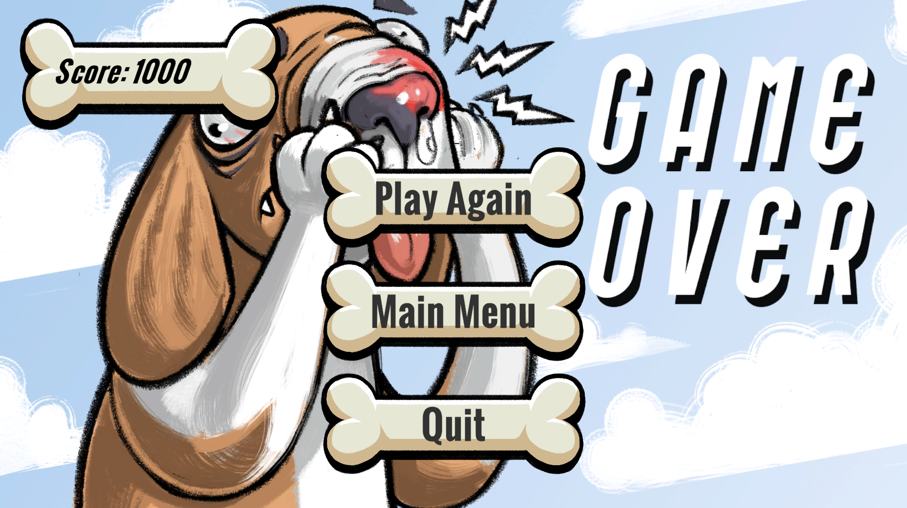
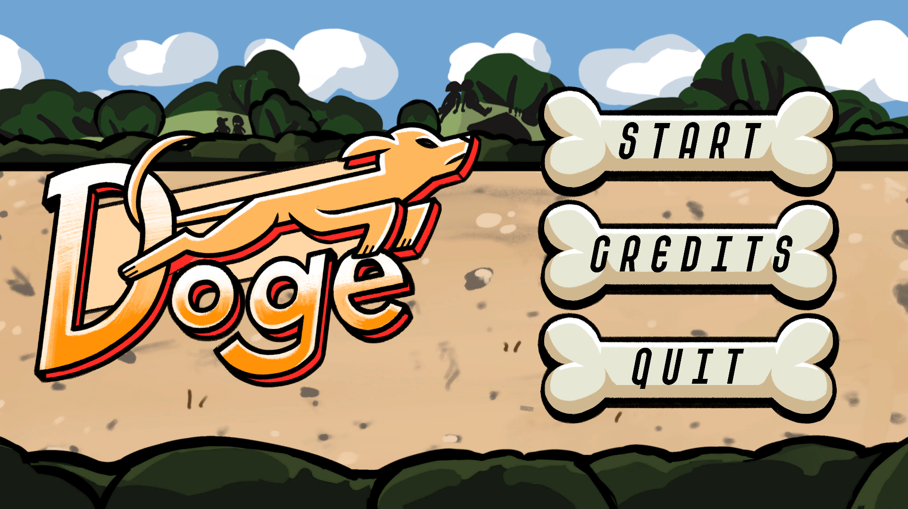
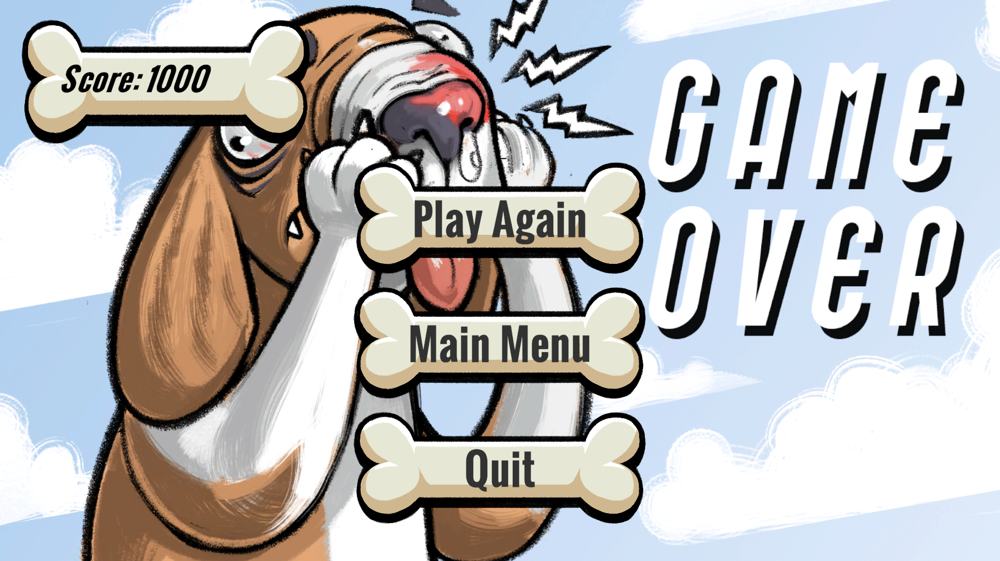
Doge
Programmer, January 2024 (Global Game Jam 2024)
Doge is an infinite sidescroller where you must prolong your walk to eat as much as possible.
Contributions:
- Acted as lead developer where I was responsible for programming or supervising all code-related tasks
- Imported and implemented art and audio assets created by teammates
- Managed restricted time and resources apporpriately to allow for an on-time release
- Guided a beginner unity programmer to the point of independence with minimal need for intervention

 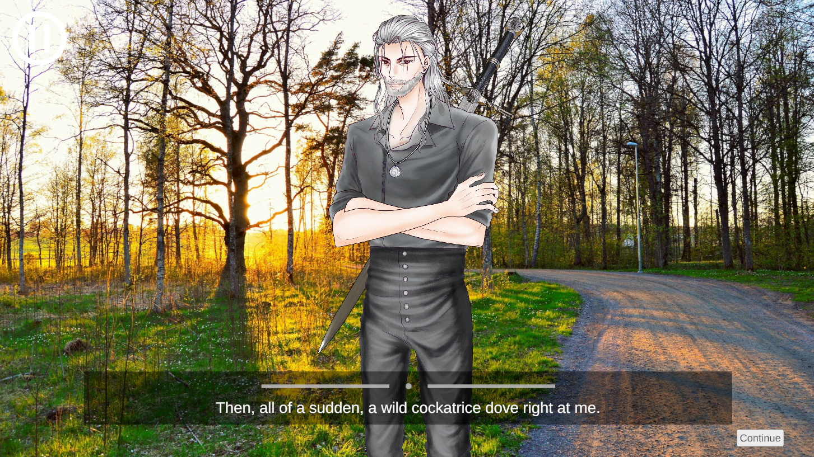
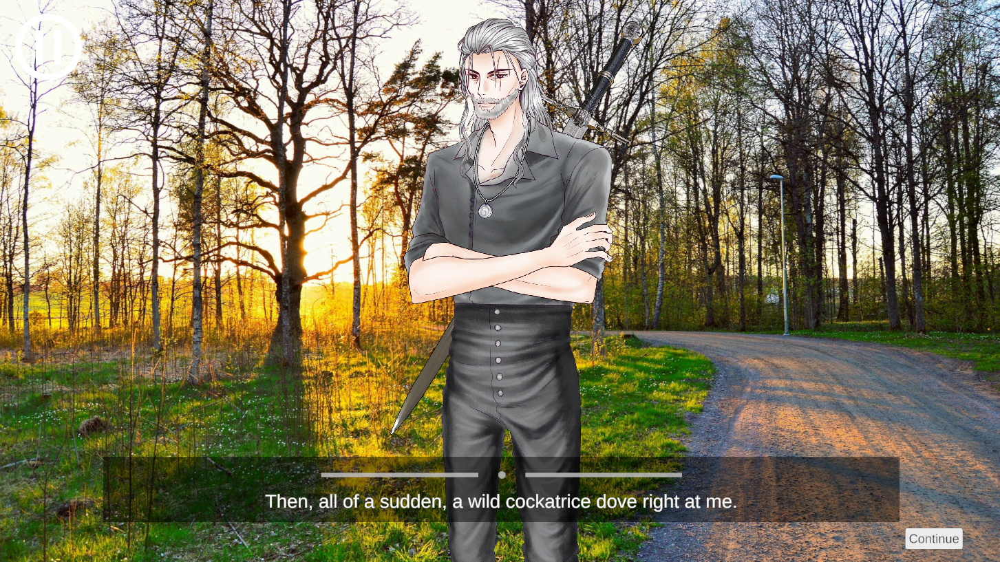
Mickey-Q's Toxic Yaoi
Programmer, March 2024 (WolverineSoft Shammy Jam 2024)
Mickey-Q's Toxic Yaoi is a dating simulator where you can romance various popular video game characters.
Contributions:
- Integrated YarnSpinner, a popular third party dialogue tool, into Unity project
- Developed character state system to allow for differnt emotions and sounds to be displayed at certain times
- Worked effectively with narrative and programming teams to efficiently import large amounts of dialogue in a short time span
Contact
Email: nickolasdcerrone@gmail.com
Linkdin: Nickolas Cerrone